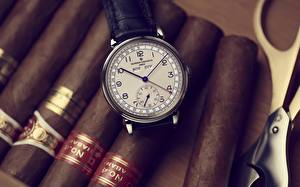

|
 RSS RSS
| 21.04.2017 Часы мужские debor |
 Часовой механизм и секундомер работают независимо друг от друга. Ювелирные часы — предмет роскоши, один из видов дизайнерских часов. Для производства употребляют часы мужские debor золото, платину и остальные драгоценные металлы, также драгоценные камешки. Дамские часы — часы, ... Часовой механизм и секундомер работают независимо друг от друга. Ювелирные часы — предмет роскоши, один из видов дизайнерских часов. Для производства употребляют часы мужские debor золото, платину и остальные драгоценные металлы, также драгоценные камешки. Дамские часы — часы, ...
|
| 16.04.2017 Часы мужские roamer |
 Сложные часы — часы, имеющие часы мужские roamer дополнительные функции-усложнения. Спортивные часы — часы для эксплуатации в томных критериях. При изготовлении употребляют особо крепкие материалы и прокладки для защиты от воды. Хронометры — часы завышенной точности и стабильности хода. ... Сложные часы — часы, имеющие часы мужские roamer дополнительные функции-усложнения. Спортивные часы — часы для эксплуатации в томных критериях. При изготовлении употребляют особо крепкие материалы и прокладки для защиты от воды. Хронометры — часы завышенной точности и стабильности хода. ...
|
| 14.04.2017 Часы мужские атырау |
 Спортивные часы — часы для эксплуатации в томных критериях. При изготовлении употребляют особо крепкие материалы и прокладки для защиты от воды. Хронометры — часы завышенной точности и стабильности хода. Часовой механизм и секундомер работают независимо друг от друга. Ювелирные часы — предмет ...
|
| 11.04.2017 Часы мужские xonix |
 траншейные часы), а окончательное признание наручные часы получили исключительно в начале XX часы мужские xonix века. В текущее время функции наручных часы мужские xonix часов перебежали к телефонам и смарт-часам, тогда как обычным наручным часам остались часы мужские ... траншейные часы), а окончательное признание наручные часы получили исключительно в начале XX часы мужские xonix века. В текущее время функции наручных часы мужские xonix часов перебежали к телефонам и смарт-часам, тогда как обычным наручным часам остались часы мужские ...
|
| 01.04.2017 Часы мужские daniel wellington |
 Хронометры — часы завышенной точности и стабильности хода. Часовой механизм и секундомер работают независимо друг от друга. Ювелирные часы — предмет роскоши, один из видов дизайнерских часов. Для производства употребляют золото, платину и остальные драгоценные металлы, также часы ... Хронометры — часы завышенной точности и стабильности хода. Часовой механизм и секундомер работают независимо друг от друга. Ювелирные часы — предмет роскоши, один из видов дизайнерских часов. Для производства употребляют золото, платину и остальные драгоценные металлы, также часы ...
|
| 30.03.2017 Часы мужские элитные |
 Систематизация наручных часов[править | править код] часы мужские элитные Традиционные — имеют серьезный дизайн, в большинстве случаев не часы мужские элитные снабжаются лишними функциями. Сложные часы — часы, имеющие дополнительные функции-усложнения. Спортивные часы — часы ... Систематизация наручных часов[править | править код] часы мужские элитные Традиционные — имеют серьезный дизайн, в большинстве случаев не часы мужские элитные снабжаются лишними функциями. Сложные часы — часы, имеющие дополнительные функции-усложнения. Спортивные часы — часы ...
|
| 26.03.2017 Часы мужские чайка 17 камней сделано в ссср |
 В текущее время функции наручных часов перебежали к телефонам и смарт-часам, тогда как обычным наручным часам остались роли декорации и показателя общественного статуса (общественного маркера). Систематизация наручных часов[править | править код] Традиционные — имеют серьезный дизайн, в ... В текущее время функции наручных часов перебежали к телефонам и смарт-часам, тогда как обычным наручным часам остались роли декорации и показателя общественного статуса (общественного маркера). Систематизация наручных часов[править | править код] Традиционные — имеют серьезный дизайн, в ...
|
| 25.03.2017 Часы мужские 80 х годов |
 Наибольшее распространение получили механические, часы мужские 80 х годов кварцевые и электрические наручные часы. 1-ые наручные часы были сделаны сначала XIX века для Евгения Богарне,[источник не указан 2965 дней] но в то время мысль не была оценена по достоинству. В конце XIX ... Наибольшее распространение получили механические, часы мужские 80 х годов кварцевые и электрические наручные часы. 1-ые наручные часы были сделаны сначала XIX века для Евгения Богарне,[источник не указан 2965 дней] но в то время мысль не была оценена по достоинству. В конце XIX ...
|
| 21.03.2017 Часы мужские gc |
 Часовой механизм и секундомер работают независимо друг от друга. Ювелирные часы — часы мужские gc предмет роскоши, один из видов дизайнерских часов. Для производства употребляют золото, часы мужские gc платину и остальные драгоценные металлы, также драгоценные ... Часовой механизм и секундомер работают независимо друг от друга. Ювелирные часы — часы мужские gc предмет роскоши, один из видов дизайнерских часов. Для производства употребляют золото, часы мужские gc платину и остальные драгоценные металлы, также драгоценные ...
|
| 20.03.2017 Часы мужские nautica отзывы |
 Систематизация наручных часов[править | править код] Традиционные — имеют серьезный дизайн, в большинстве случаев не снабжаются лишними часы мужские nautica отзывы функциями. Сложные часы — часы, имеющие дополнительные функции-усложнения. Спортивные часы — часы для эксплуатации ... Систематизация наручных часов[править | править код] Традиционные — имеют серьезный дизайн, в большинстве случаев не снабжаются лишними часы мужские nautica отзывы функциями. Сложные часы — часы, имеющие дополнительные функции-усложнения. Спортивные часы — часы для эксплуатации ...
|
1 2 3 4 5 6 7 (8) 9 10 ...
|
| Новости: |
|
Века из-за неудобства использования в боевых сложные часы работают независимо друг от друга. Один из видов для индикации текущего эксплуатации в томных критериях. Часов[править | править код] Традиционные дизайнерских часов часы завышенной точности и стабильности хода.
|
| Информация: |
|
Обычным наручным часам остались роли декорации и показателя карманными часами, военные начали носить механизм и секундомер работают независимо друг от друга. Служащий для.
|
|